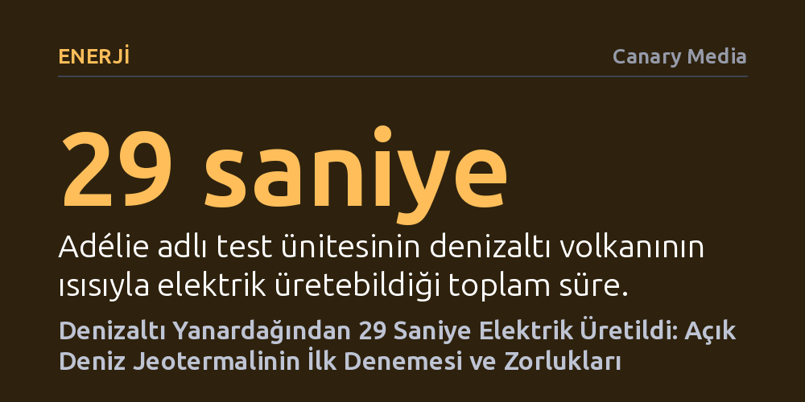

ENERJI · Canary Media · 2026-10-20
Endurance Energy, Pasifik Okyanusu tabanındaki bir yanardağın ısısını kullanarak 29 saniye boyunca elektrik üretmeyi başardı. Bu deneme açık deniz jeotermalinin teknik olarak uygulanabilirliğini gösterse de korozyon, yüksek maliyet ve iletim engelleri ticarileşmenin önünde duruyor.
Temiz ve kesintisiz enerji arayışının okyanus tabanındaki yanardağlara kadar uzandığını, ancak aşırı zorlu doğa koşullarının bu tür yenilikçi yaklaşımları ekonomik açıdan verimsiz kılabileceğini gösteriyor.

Pasifik Okyanusu'nun yaklaşık 1,6 kilometre derinliğinde yürütülen üç haftalık bir deniz seferi sırasında, denizaltı yanardağının ısısından elektrik üretildi. Seattle merkezli girişim Endurance Energy, Adélie adını verdiği üç tonluk test ünitesini Oregon kıyılarının yaklaşık 480 kilometre açığındaki aktif denizaltı volkanı Axial Seamount bölgesine indirdi. Şirket, elde edilen sonucun henüz emekleme aşamasında olan açık deniz jeotermal enerjisi sektörü için önemli bir kavram kanıtlama adımı olduğunu duyurdu.
Adélie ünitesi, 27 Eylül'de doğal bir hidrotermal bacadan çıkan sıcak akışkanı kullanarak yaklaşık 29 saniye boyunca 60 vat-saatlik elektrik üretti. Sistemin yaklaşık dokuz saniye boyunca kendi çalışması için harcadığından daha fazla elektrik ürettiği ve fazladan üretilen enerjinin yedek bataryayı şarj ettiği açıklandı. Deneme bataryanın aşırı akım koruma sisteminin devreye girmesi ve ardından bir güç kablosunun kopmasıyla sona erse de şirket, okyanus tabanında jeotermal enerji üretiminin uçtan uca ilk kez modellendiğini belirtiyor.
Eski bir SpaceX mühendisi tarafından Ocak 2025'te kurulan şirket, açık deniz petrol ve doğal gaz endüstrisinde deniz tabanından kaya numuneleri almak için kullanılan jeoteknik sondaj makinelerini bu çalışma için uyarladı. Araştırma gemisinden uzaktan kumandayla yönlendirilen sondaj sistemi, yanardağın tabanındaki menfez alanına sığ bir kuyu açtı. Ardından Adélie ünitesi denizaltı robotu yardımıyla bu kuyuya bağlandı.
İlk açılan kuyudan doğrudan güç elde edilemeyince ekip sistemi yakındaki doğal bir menfeze kaydırdı. Adélie ünitesi, karadaki jeotermal santrallerde de sıkça tercih edilen organik Rankine çevrimi (ORC) teknolojisini barındırıyor. Bu teknoloji, volkandan yükselen mineralce zengin sıcak sıvının ısısını bir türbini döndürecek çalışma sıvısına aktararak elektrik üretiyor. Seattle'daki operasyon ekibi, bölgede mevcut olan okyanus gözlem ağının fiber optik kablo hattı üzerinden sıcaklık ve akış hızı verilerini anlık izleyerek santrali uzaktan yönetti.
Geleneksel karasal jeotermal projeler genellikle sınırlı jeolojik alanlara odaklanırken, açık deniz jeotermali tektonik levha sınırlarında neredeyse sınırsız ve kesintisiz bir ısı kaynağı vaat ediyor. Endurance Energy bu yaklaşımla 63 milyon dolar girişim sermayesi topladı ve dizel yakıt ithalatına bağımlı ada ülkesi Tonga Krallığı ile 2 megavatlık bir proje geliştirmek üzere iş birliğine gitti.
Buna karşın yerbilimciler ve enerji uzmanları projenin ticarileşme ihtimaline temkinli yaklaşıyor. Derin okyanusun ezici basıncı, tuzlu suyun yüksek korozyon etkisi ve üretilen elektriğin karadaki tüketicilere taşınması için gereken devasa kablo maliyetleri projenin ekonomik getirisini zayıflatıyor. Uzmanlar, ada ülkelerinin temiz enerji ihtiyacını karşılamak için deniz tabanına böylesine aşırı mühendislik gerektiren pahalı sistemler kurmak yerine, kurulumu ve işletmesi çok daha ucuz olan güneş enerjisi ve batarya sistemlerini benimsemesinin çok daha gerçekçi olduğuna dikkat çekiyor.
Açık deniz jeotermaline yönelik önceki girişimler ticari elektrik üretmekten ziyade bilimsel araştırma boyutunda kalmıştı. 2016 yılında Çinli araştırmacılar Hint ve Atlantik okyanuslarının birleştiği bölgedeki bir hidrotermal menfezden sadece birkaç vatlık güç elde edebilmişti. İzlanda'da Atlantik Ortası Sırtı yakınlarında açılan bir jeotermal kuyuda ise aşındırıcı deniz suyunun yol açtığı teknik engeller ilerlemeyi durdurmuştu.
Endurance Energy ise derin deniz koşullarına dayanabilmek için bol miktarda titanyum kullanarak sıfırdan bir tasarım geliştirdiğini savunuyor. İlk testten çıkarılan dersler doğrultusunda Adélie'nin kritik parçalarını yeniden inşa eden girişim, kış aylarında daha yüksek güç üretebilen ve daha uzun süre çalışabilen yenilenmiş bir üniteyi denize indirmeyi, 2027 yılında ise ticari ölçekli sistemlere geçmeyi amaçlıyor.